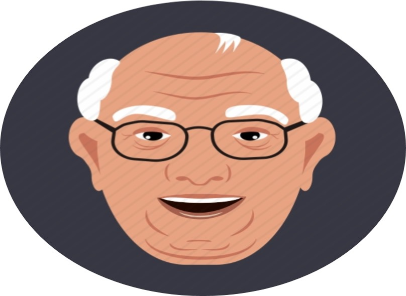

Conact Me
 מקווה שנהנתם
מקווה שנהנתם
!ברוכים הבאים
כאן תוכלו למצוא מידע עליי
מקווה שתהנו, אליהו פרץ
!ברוכים הבאים לאתר שלי
.שמי אליהו פרץ, נולדתי במרוקו בכפר ליד טלוואת בשנת 1935, בן חמישי למשפחה בת שישה ילדים
.כשהייתי בן 21 בשנת 1956 עליתי לארץ יחד עם משפחתי לעיר שדרות שם אני חי עד היום
,העלייה לארץ ישראל הייתה מאוד קשה, שטנו בספינה שנקראת "סקנייה" ממרקש לירושלים
.ישנו על מזרונים מקש והייתה צפיפות נוראית
.לאחר העלייה לארץ חיינו במעברות במשך כמה חודשים ולאחר מכן עברנו לגור בשיכונים
.להוריי היה קשה לכלכל את הבית ולכן נאלצתי לעזור להם כדי שיוכלו להמשיך לכלכל אותי ואת אחיי
בארץ היה קשה מאוד למצוא עבודה ולכן עבדתי בהמון עבודות מזדמנות כמו מטעים, קק"ל ומפעל יהלומים
.עד שמצאתי עבודה רצינית בכבלי ציון שם עבדתי במשך 30 שנה
.בשנת 1960 התחתנתי עם אשתי פאני ולאט ולאט הקמנו משפחה בת 10 ילדים- 6 בנים ו4 בנות
,כיום אחרי כל מה שעברתי אני נהנה מהפירות עליהם עמלתי במהלך חיי
.אני אוהב ללכת לים, לטייל, להנות עם המשפחה, הנכדים והנינים
:web1,web2,web3 ההבדלים בין
| Web 3.0 | Web 2.0 | Web 1.0 | קריטריון השוואה |
|---|---|---|---|
| 2010-2020 | 2000-2010 | 1990-2000 | שנים |
| הדפים דינמיים ומאפשרים כתיבה וקריאה, בנוסף המידע המוצג עובר עיבוד(הרשת מנסה למצוא את המידע הטוב ביותר, לעבד, לנתח ולהבין אותו) | אתרים דינמיים יותר, מאפשרים גם קריאה וגם כתיבה(אפשרות לשתף תוכן) | האתרים סטטיים ומאפשרים קריאה בלבד | סוג הדף |
| מנועי החיפוש אחזרו תגיות עם תוכן מיקרו. תהליך החיפוש הוא אוטומטי ומדוייק. כמו כן החיפוש לא התבצע רק לפי מילות מפתח אלא סמנטי יותר(עיבוד המידע) | מנועי חיפוש אחזרו תגיות עם תוכן מיקרו. תהליך התיוג הוא ידני ומכסה אחוזים קטנים מהרשת | מנועי חיפוש אחזרו תגיות עם תוכן מאקרו. החיפוש היה מהיר אך לרוב לא מדוייק | חיפוש המידע |
| הרשת מאפשרת שיתוף והצגה של מידע ע"י מעבר לבינה מלאכותית, עיבוד שפה טבעית, המידע מוצג לאחר עיבוד. קיימת אינטרקציה בין המשתמש לאתר והיא מותאמת אישית | רשת שיתופית, מאפשרת אינטרקציה בין המשתמשים השונים באתר. מאפשרת למשתמשים לשתף מידע בעצמם,לבצע עידכונים ואיסוף מידע קולקטיבי | הרשת נועדה להצגה ושיתוף של המידע בלבד. המנהל של האתר אחראי לעדכן אותו. אינטרקציה נמוכה מאוד עם המשתמש | מטרה ואינטרקציה עם משתמשים |
"המלצות למסעדה טובה" :use caseלפי ה web1,web2,web3 השוואה בין
| Web 3.0 | Web 2.0 | Web 1.0 |
|---|---|---|
| האתרים שיחזרו יהיו אתרים שעונים בצורה הטובה ביותר על השאילתא כלומר יחזירו המלצות טובות על מסעדה חוות דעת וביקורות, נקבל תוצאות שמותאומות לנו אישית לפי חיפושי עבר ועוד | יוחזרו אתרים שעונים על השאילתא ,כמו כן נקבל אתרים המכילים דיונים על מסעדות שונות הממולצות ביותר .כלומר חוות דעת וביקורות של אנשים על מסעדות שונות | התוצאות שיחזרו יכילו אתרי בית סטטיים. האתרים הללו תויגו לפי המילים המתאימות לפי השאילתא בלבד ולכן התוצאות לא יהיו מדויקות. לצורך העיניין נקבל אתרים שמסבירים על ענף המסעדנות |
מקווה שנהנתם